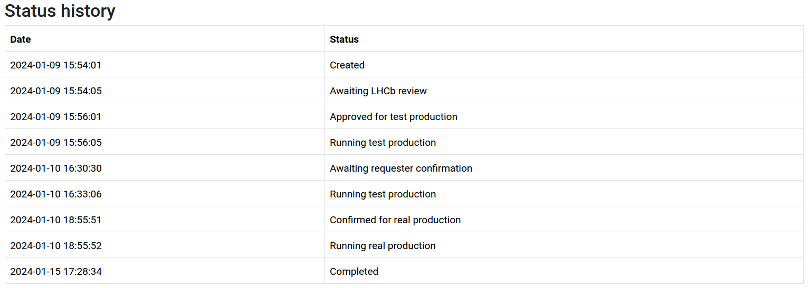
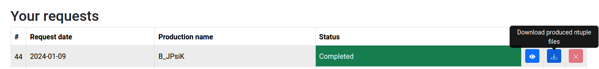
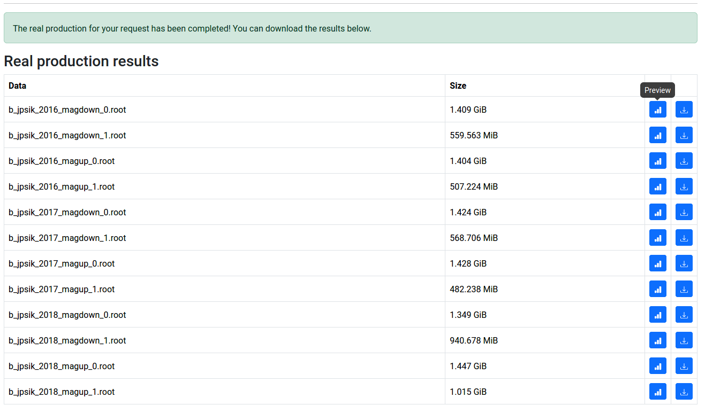

Retrieving Output
After confirmation of the test results, the full production will be approved by the LHCb open data team, and the full set of selected data will be processed. Upon completion of processing of the full production, the status will change to “Completed”, as shown below, and the user will recieve an email notification letting them know that their Ntuples are ready to be downloaded.

At this stage, a blue “download” button will appear next to the view button along with your request on the open data portal, as shown below.

Clicking the download files button will navigate you to the location of the “Real production results”, where the Ntuples are listed along with their file sizes, and each can be downloaded by the user. Take care to download the Ntuples promptly, as the CERN Open Data Portal will not be able to host them indefinitely.
